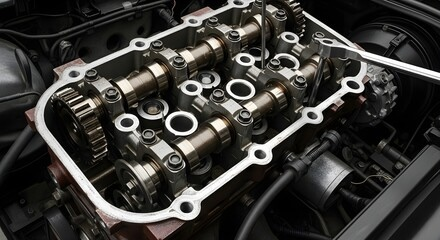

Due by mileage or time
If the next service interval is approaching, send the make, model, registration and mileage so we can discuss what is due.
Motorcycle servicing · Shrewsbury
Routine and scheduled motorcycle maintenance built around the bike, its mileage, condition and service requirements.
Maintenance that fits the bike
Service work is agreed around the motorcycle and what is due. That can range from basic routine maintenance through to more comprehensive scheduled work.

When to get in touch
If the next service interval is approaching, send the make, model, registration and mileage so we can discuss what is due.
A bike returning to use after storage may need fluids, battery, tyres, brakes and other age-related items checked.
If the service history is uncertain, we can discuss sensible baseline maintenance rather than guessing what has already been done.
Questions
All makes and models are considered. Send the bike details and the work required and we can confirm whether the job is suitable.
No. Provide the registration, make, model, mileage and any service history you have. We can discuss the appropriate work before the appointment is confirmed.
No. Salopian Motorsport does not carry out motorcycle MOT tests.
Need help with your bike?
Send the bike details and what you’re experiencing. We’ll review the enquiry and contact you to arrange the next step.